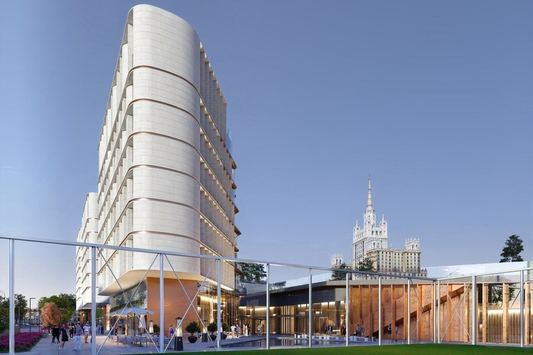

Продаёт застройщик Зоопарк · Дружинниковская ул., 18
Дом Спорта
- Capital Group
- срок I кв. 2029
- 10 этажей
- 92 квартиры
- паркинг на 290 мест
- архитектор Сергей Скуратов
| Формат | Площадь | Вход |
|---|---|---|
| 1-комн. | от 46,2 м² | от 110,4 млн ₽ |
| 2-комн. | от 62,8 м² | от 143,4 млн ₽ |
| 3-комн. | от 103,2 м² | от 289,9 млн ₽ |
| 4-комн. | от 124,4 м² | от 346,8 млн ₽ |
Метр: 2,28–3,17 млн, медиана 2,80 млн. 12 лотов у застройщика.
На заметку: Квартал Сергея Скуратова на месте стадиона «Красная Пресня»: футбольное поле остаётся в центре. Старт продаж — 12 лотов от однокомнатной 46,2 м² за 110,4 млн, медиана 2,80 млн за метр — самый дорогой новый метр Пресни. Машиномест 290 на 92 квартиры, больше трёх на каждую. В паспорте два минуса: четыре квартиры на этаже — для элиты много, и застройщик (проверка 06). Ключи — в I квартале 2029 года.